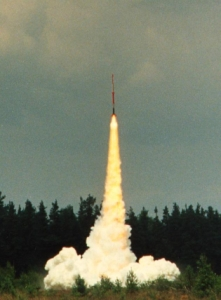

A cink-kén (a továbbiakban Zn/S) üzemanyagot gyakran találjuk az amatőr rakétaüzemanyagok között felsorolva, ám az összetevők tömegarányán meg néhány elszórt fajlagos impulzus értéken kívül nehéz hasznos információt fellelni róla. Ennek oka leginkább abban keresendő, hogy ez az egyik "leggyengébb" rakétaüzemanyag; gyakorlati fajlagos impulzusa kivitelezéstől függően Isp = 45...55 s tartományba esik, ami nagyon alacsony még a lőporos üzemanyagokhoz képest is. Ehhez hozzáadódnak még a készítésével járó nehézségek is, érthető hát hogy nagyon kevesen használják ezt az üzemanyagot. Ennek ellenére mégis érdemesnek tartom írni róla, mert ha nem is fog senki Zn/S-el működő rakétát építeni, talán néhány vegyészbalesetnek elébe vághatok ezzel a leírással.
A Zn/S üzemanyag egy igazi "nagy öreg" az amatőr rakétaüzemanyagok között. Az amatőr rakétázás hőskorában született, valamikor az 1940 magasságában (hol máshol mint Amerikában...). Felfedezője George James, a későbbi Reaction Research Society alapítója, aki "micrograin" névre keresztelte. Az üzemanyag viszonylag gyorsan elterjedt amatőr körökben, de csupán az 50'-60'-as években volt igazán népszerű. B.R. Brinley 1960-ban kiadott könyvében ismerteti az üzemanyagot és a cink/kénes rakétamotor tervezési és készítési módját (Captain Bertrand R. Brinley - Rocket manual for amateurs. Ballantines Bal.Mi, 1960) és egyenesen odáig megy a következtetéseiben, hogy az amatőrök számára ez az ideális üzemanyag, hiszen az összetevői legálisan beszerezhetők és maga az üzemanyag eléggé jó ahhoz, hogy egy házi készítésű rakétát jó magasra fölrepítsen (és ennyiben ki is merült az amatőr rakétázásról alkotott kép akkoriban). Az üzemanyagot a NASA és a hadsereg is tanulmányozta (még az 50-es években) és épültek is Zn/S-es rakéták. Az alacsony fajlagos impulzus meg a túl magas és főként ellenőrizhetetlen égési sebesség miatt azonban ezek a kísérletek abbamaradtak. Azóta a Zn/S üzemanyag kizárólag amatőr felhasználásnak örvend. Kezdetben (a cukros és kompozit üzemanyagok térhódítása előtt) sok népszerű amatőr rakétásklub, így pl. a dán DARK , a belga VRO (akkoriban még BVRO) illetve a holland NERO is épített Zn/S rakétákat, néhányuk a mai napig is folytatja ezirányú kísérleteit. Az 1. ábrán a DARK egyik ilyen rakétája látható, a kilövés pillanatában.
|  |
| 1. Ábra: Zn/S üzemanyagú rakéta gázcsóvája (www.dark.dk oldalról) |
A fenti elmélet következményeként a Zn/S rakétamotrok tervezése és felépítése kissé eltér a "hagyományos" szilárd üzemanyagú motrokétól. Egyrészt a motorfal aránytalanul vastag acélból készül, hogy elviselje amagas nyomást, másrészt meg a legfontosabb a tervezés igen sajátos empirikus motorjellemzők szerint történik. Ilyenek pl. a "fajlagos hossz", ami nem más mint az égéstér térfogata (Vm)és a fúvókaátmérő (At) aránya az Ls=Vm/At képlet szerint, valamint az "üzemanyagtartalék" (a kezdeti üzemanyag tömegének és a fúvókaátmérőnek az aránya), amelyek az égési időt meghatározzák. A motor hossza csupán a tolóerőgörbe maximumának helyét határozza meg.
Látható, hogy a cink és kén reakciója során atmoszférikus nyomáson gáznemű termék nem keletkezik, gyakorlatilag a hatalmas hőmérsékleten elpárolgott cinkszulfid hajtja előre a rakétát. Ebből (és a cinkszulfid fázisváltásaiból) adódik a fajlagos impulzus viszonylag alacsony értéke is: bár az égéstér nyomása kezdetben igen magas, sajnos a kiáramló részecskék molekulatömege igen nagy, ezért ezek nem képesek eléggé felgyorsulni. Ezzel magyarázható többek között, hogy a Zn/S motrok sokkal gyengébben teljesítenek mint a lőporosok, annak ellenére, hogy a Zn/S üzemanyag fajlagos energiája alig kisebb mint a lőpornak. Ami a fajlagos impulzusnak hátrány, az látványnak viszont nem utolsó: a Zn/S motor nagyon szép, narancssárgán izzó gáztömeget hagy maga után, amely aztán átmegy "egyszerű" fehér füstbe (lásd az 1. ábrát). A sok füst a fúvókán kiáramló szilárd részecskének tulajdonítható, a gázfázisú cinkszulfid ugyanis az égéstérből kilépve cinkszulfid-ködöt alkot amint szilárd halmazállapotba megy át.
összetétel (tömeg %) 67.1 Zn / 32.9 S olvasztási hőmérséklet (°C) 112 - 130 sűrűség (g/cm3) 3.6 - 4.5 elméleti Isp (s): 70 gyakorlati Isp (s): 50-55 (40-45)* égési sebesség @120 atm (mm/s): ~ 100 (~ 8000)* égéstermékek molekulatömege (g/mól): 97 * - a préselt változatra vonatkozó értékek 1. Táblázat:
a Zn/S üzemanyag
legfontosabb
jellemzői
A Zn-S üzemanyag készítésére a gyakorlatban két módszer használatos. Az egyik szerint a cinkport és kénport jól összekeverjük, majd a rakétamotorba tömörítjük. A keverést nagyon óvatosan kell végezni, inkább "összerázni" kell a két komponenst mint keverni. A tömörítésnél úgyszintén óvatosan kell eljárni: préselés helyett vibrációs asztalon szokás a por alakú üzemanyagot "a motorba rázni", amíg az kompakt tömeget nem alkot. Az óvintézkedések túlzottnak tűnhetnek, de azonnal megérthetőek amint egy kis kupac Zn/S üzemanyagot samottéglán meggyújtunk: egy nagyon fényes és forró villanás az egész, amelynek senki nem szeretne a közelében lenni ha csak egy kicsit is nagyobb lenne. Valamivel biztonságosabb a "nedves" tömörítés. Ez abban áll, hogy a jól összekevert cinkport és kénport 96%-os etilalkohollal keverjük. A nagyon finom por az alkohollal egyféle "agyagot" képez, amelyet aztán a motorba döngölhetünk. Teljes száradás után használható.
A második módszer az olvasztásos: eszerint a cinkport kell beleolvasztani a kénbe. Fölösleges mondani, hogy ez a veszélyesebb módszer, egyáltalán nem ajánlott kipróbálni. A kén ugyan alacsony hőmérsékleten megolvad, de egyrészt nagyon büdös és mindenhová behatoló kén-dioxidot ereget olvadás közben, másrészt meg ha véletlenül begyúl az elegy... Ha szerencsésen megúsztuk az összeolvasztást, akkor minőségileg jobb üzemanyaghoz jutunk mint a keveréses módszerrel. Az olvasztott üzemanyag gyakorlati fajlgos impulzusa Isp = 50...55 s, míg a keverté csak 40...45 s. Látható tehát, hogy még a sok kínnal és büdösséggel összeolvasztott Zn/S elegy is gyengébben teljesít mint egy legegyszerűbb lőporos motor.
Bármely módszer szerint járunk is el az üzemanyag készítésekor, lényeges hogy a felhasznált cinkpor a lehető legfinomabb legyen. A nagyon kis szemcseméret a siker titka, az ún. "atomizált" cinkpor a megfelelő minőségű. Másik lényeges pont, hogy a motorban nem szabad semmiféle szerves anyag maradjon (pl. papírból vagy taxtíliából készült hőszigetelés), ami nagy hőmérsékleten gázakatat fejleszthet, mert az motorrobbanáshoz vezethet. A tűlségosan magas kamranyomás miatt nem használható a motorral egybeépített pirotechnikai időzítőtöltet az ejtőernyő kioldásának késleltetésére. Ezt egyrészt a nyomás kiröpítené, másrészt meg magas nyomáson olyn gyorsan égne, hogy a késleltetés csupán a másodperc töredékéig tartana.
Pro: kétségtelenül a Zn/S üzemanyag mellett szól, hogy az összetevői bármiféle engedély nélkül megvásárolhatóak. Ként bárhol találunk, nagyon finomra őrőlni pedig már csak elhatározás meg türelem kérdése. Cinkport beszerezni bajosabb, de igazából ez sem akadály: az interneten találni fémporokat forgalmazó cégeket (akár pirotechnika szakboltokat), és a posta is elszállítja bárhová, mivel nem veszélyes anyagról van szó. Előnyként áll1tható be, hogy a Zn/S nagyon magas égési sebessége lehetővé teszi, hogy akár fúvóka nélkűli rakétamotrot építsünk. Pozitívum lehet továbbá az is, hogy a kilövés kétségkívül igen látványos. A sok képződő füst egész más hatást vált ki a szemlélőben mint pl. egy hibrid motor "tiszta" startja. Az előnyök sajnos itt ki is merülnek.
Kontra: Alacsony fajlagos impulzus, túl gyors égés, nem éppen veszélytelen előállítás, robbanásveszélyes motrok... elég súlyos érvek a Zn/S használata ellen. A Zn/S legrosszabb tulajdonsága mégis az, hogy túl nagy nyomáson működik és ez vastag falú, nagy tömegű rakétamotrokat eredményez. A Zn/S motroknál megszokottnak mondható 120 atmoszféra a szilárd üzemanyagú rakétamotroknál megszokott üzemi nyomás sokszorosa. Ezt a nyomást és a magas hőmérsékletet csakis fémből készült motor bírja el. Az alacsony Isp és a súlyos motor egyenes következménye, hogy rakétánk viszonylag gyengén fog teljesíteni. A start lehet elég dinamikus, mert a legnagyobb kamranyomás az üzem kezdetén van, magassági rekordot azonban nem fogunk Zn/S rakétával dönteni.
Konklúzió: Más amatőr üzemanyagok előnyeivel és hátrányaival összevetve arra jutunk, hogy a kilövés szépségén kívül igazából semmi nem indokolja a Zn/S üzemanyag használatát, hacsak nem az, hogy van elfekvőben néhány zsák kén- meg cinkporunk, amit valamire úgyis el kellene használni...